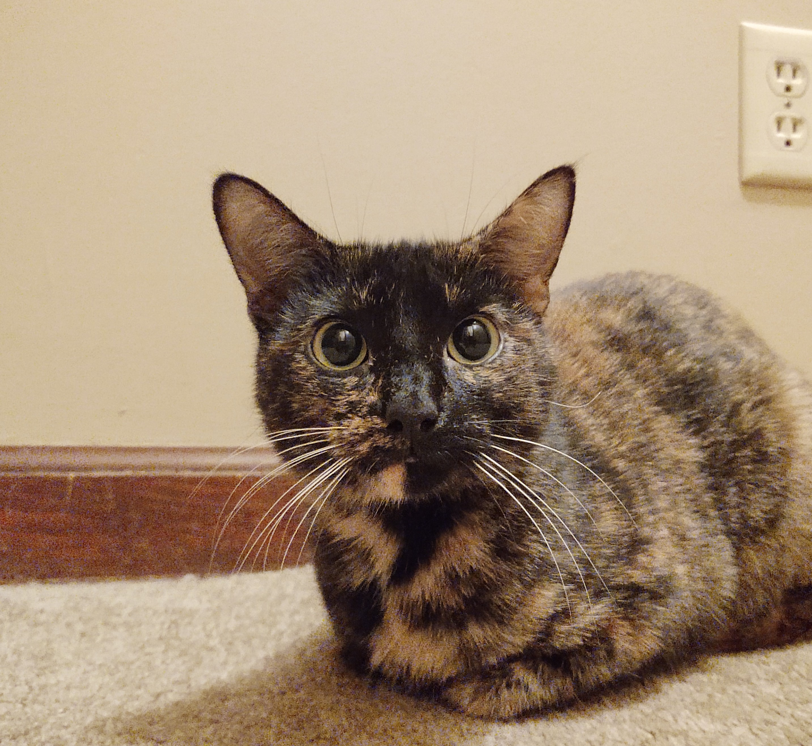
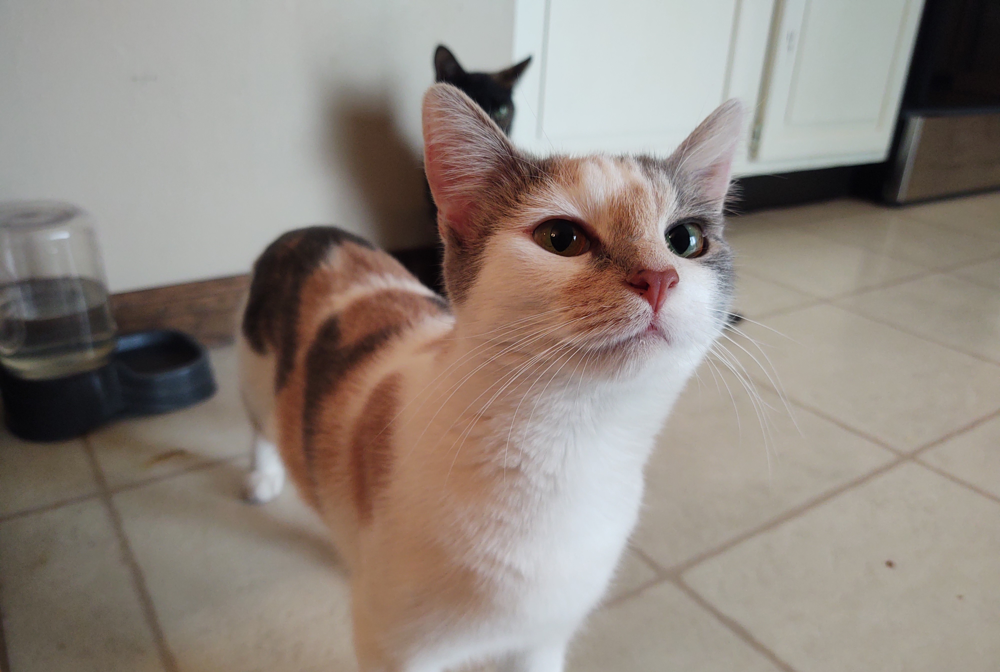
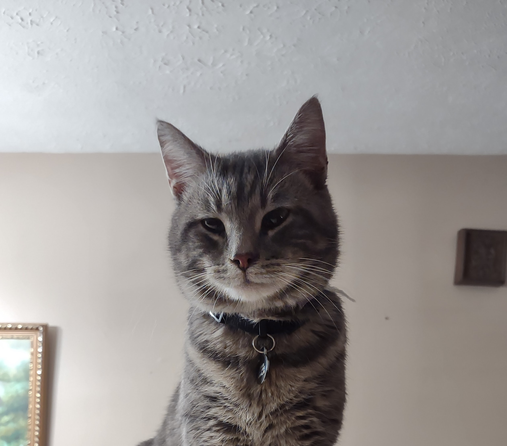
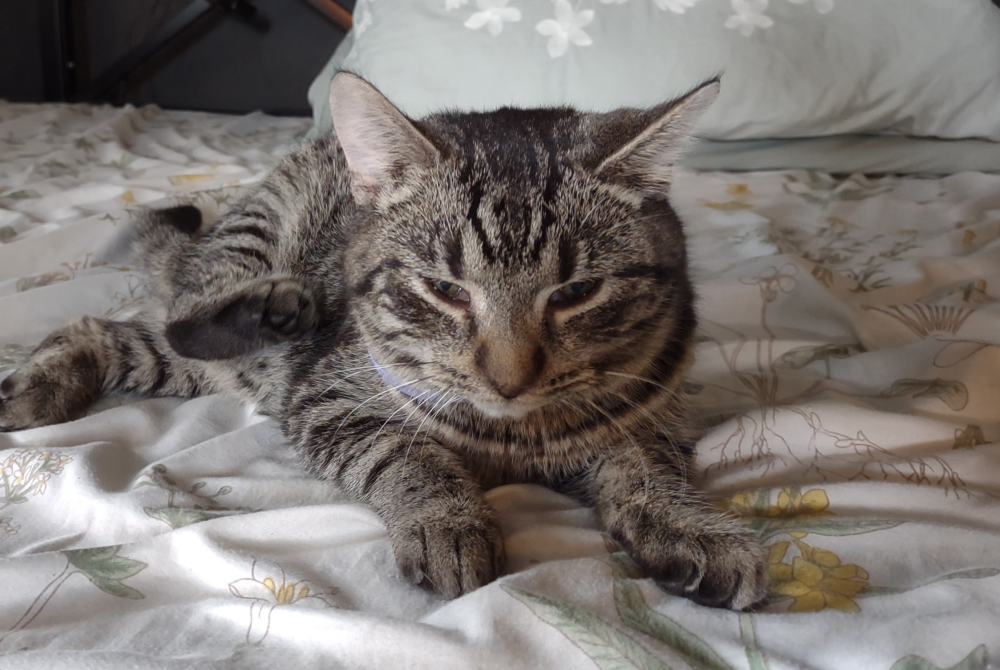

Jacob
Solomon
About Jacob M. Solomon
Bio
I'm Jacob, a very enthusiastic and hardworking learner. In jobs I always try to learn every responsibility around to get a better grasp of how things around me work. I love software development because there are endless things to learn and the more you learn in one field, the easier it is to break into an adjacent field.
Age: 23
Experience: 1 year
Goal
I initially started programming to become a video game developer, however the more I work with dotnet the more excited I am to just be a programmer. I hope to find a job as a Dotnet Developer and hone in my skills on the job, and learn front end frameworks in my own time to become a Full Stack Developer
Languages


Technologies


Skills
- Clear Communicator
- Highly Adaptive
- Critically Thinking
- Hard Working
- Natural Leader
- Creative
- Goal Driven
- Fast Paced
- Conflict Resolver
- Quick Learner
Projects
JS/HTML5/CSS3
Studio Ghibli API
Four seperate HTML pages that flesh out four unique ways of accessing the Ghibli API and utilizing its information. In this project I utilized JS fetch as well as using JS to generate HTML as well as alter CSS styling.
View ProjectEli2X Official Page
A website I created for one of my friends early on in my first set of classes. I utilized HTML5 and CSS3 to create a static website that leads to all of his artist profiles as well as gives information on his albums.
View ProjectCSS Creature
A cat I made with HTML5 and CSS3. This project taught me a lot more about relative and fixed positions in CSS.
View ProjectStatic Store Front
First HTML5 and CSS3 project, In this project I learned the basics of both languages. Most noteably I learned the importance of nesting in HTML as well as the differences between classes and IDs
View ProjectC#
Hungry Helper
A project I collaborated with 2 classmates on, the backend logic for a Dotnet website. I was responsible for all functionality pertaining to Recipes and ingredients. In this project I learned a lot about Data tables and foreign keys, as well as how the layers in an N-tier architecture mesh together.
View ProjectDnD Character Creator
A CLI application with CRUD functionality for working with DnD Characters. In this project I learned how to make other C# files communicate with one another.
View ProjectPac-Man Clone
A 2D clone of Pac-Man, I created this in a weekend to practice C# as well as get more comfortable with Unity's APIs.
View ProjectPython
DnD Character Creator Clone
A project I created to teach myself Python. This project is a clone of the C# application I made with the same name, and similarly so this project taught me how python modules communicate with one another.
View ProjectStaff

Juno 106 Solomon
My oldest cat, the first one I ever adopted. She's in charge of security for my office

Luna McGolrick
The second oldest cat, adopted by my girlfriend. She's in charge of keeping up morale around the office.

Gerald Thomas Solomon
The third cat to come into the team, a stray that stayed in our garage till we adopted him. He keeps up on pest control.

Inky Graphite Solomon
The newest kitten to the family, one of Gerald's offspring before he was neutered. They are training under Luna to help with morale support.